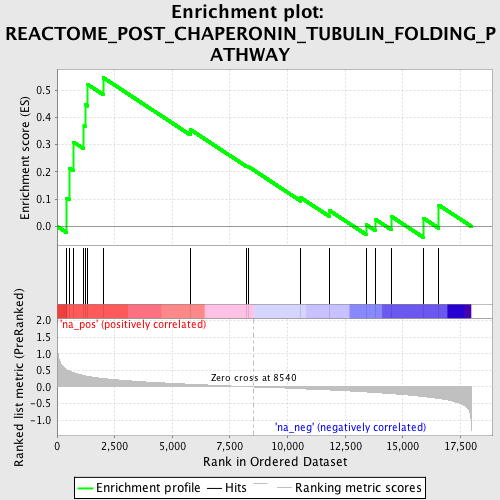
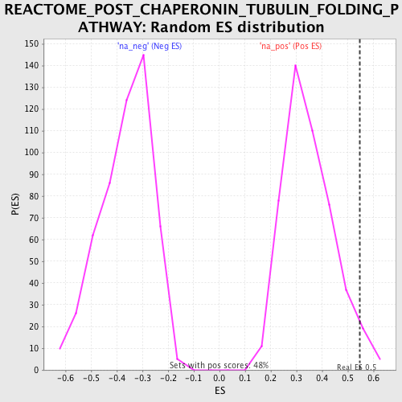

| | | Dataset | GSEA_Cushing_prerank_FC |
| Phenotype | NoPhenotypeAvailable |
| Upregulated in class | na_pos |
| GeneSet | REACTOME_POST_CHAPERONIN_TUBULIN_FOLDING_PATHWAY |
| Enrichment Score (ES) | 0.5461251 |
| Normalized Enrichment Score (NES) | 1.5775228 |
| Nominal p-value | 0.033613447 |
| FDR q-value | 0.0596574 |
| FWER p-Value | 0.977 |
Table: GSEA Results Summary

Fig 1: Enrichment plot: REACTOME_POST_CHAPERONIN_TUBULIN_FOLDING_PATHWAY
Profile of the Running ES Score & Positions of GeneSet Members on the Rank Ordered List
| PROBE | GENE SYMBOL | GENE_TITLE | RANK IN GENE LIST | RANK METRIC SCORE | RUNNING ES | CORE ENRICHMENT | | 1 | TUBB2A | | | 422 | 0.514 | 0.1038 | Yes |
| 2 | TUBB3 | | | 547 | 0.471 | 0.2134 | Yes |
| 3 | TUBA1C | | | 723 | 0.425 | 0.3088 | Yes |
| 4 | TUBB4B | | | 1166 | 0.342 | 0.3688 | Yes |
| 5 | TUBB6 | | | 1223 | 0.332 | 0.4478 | Yes |
| 6 | TUBB2B | | | 1334 | 0.318 | 0.5204 | Yes |
| 7 | TUBA1B | | | 2002 | 0.254 | 0.5461 | Yes |
| 8 | TBCE | | | 5784 | 0.080 | 0.3553 | No |
| 9 | TUBB1 | | | 8236 | 0.010 | 0.2213 | No |
| 10 | TUBB4A | | | 8307 | 0.007 | 0.2192 | No |
| 11 | TBCA | | | 10576 | -0.051 | 0.1055 | No |
| 12 | TBCB | | | 11823 | -0.090 | 0.0584 | No |
| 13 | TUBA1A | | | 13414 | -0.149 | 0.0068 | No |
| 14 | TBCD | | | 13803 | -0.167 | 0.0266 | No |
| 15 | TBCC | | | 14504 | -0.199 | 0.0369 | No |
| 16 | TUBA3D | | | 15897 | -0.286 | 0.0302 | No |
| 17 | TUBA4A | | | 16570 | -0.345 | 0.0783 | No |
Table: GSEA details [plain text format]

Fig 2: REACTOME_POST_CHAPERONIN_TUBULIN_FOLDING_PATHWAY: Random ES distribution
Gene set null distribution of ES for REACTOME_POST_CHAPERONIN_TUBULIN_FOLDING_PATHWAY